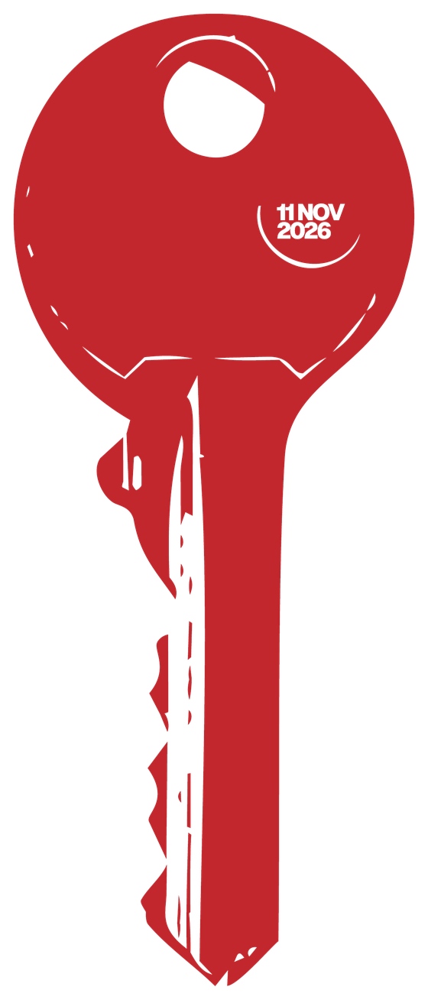

Comunicat
Comitè de Vaga de Castelló i Comarques
A la vista de les últimes notícies i l’ocorregut el darrer dia 11 de novembre amb motiu de la convocatòria de Vaga General, no només arreu de l’Estat Espanyol sinó, especialment a la ciutat de Castelló, des del Comité de Vaga de Castelló i Comarques expressem la més ferma condemna enfront de la intolerable repressió per part de les forces i cossos de seguretat de l’Estat. Concretament, l’actuació de les forces de seguretat cap a la població, violència, detencions i empresonaments que s’han dut a terme dins d’una clara estratègia repressiva contra els drets a vaga i manifestació de la classe treballadora.
Tal com va ocórrer els dies anteriors a la vaga amb la pressió intimidatòria cap a companyes i sindicalistes, el dimecres 11 la policia va assetjar i provocar contínuament als piquets informatius, impedint la seua tasca i els drets de les treballadores a ser informades, amb actitud hostil i provocativa que va generar tensió, enfrontaments i la identificació de companyes vaguistes i estudiants sense cap motiu ni excusa als piquets de tota la nostra ciutat. Condemnem amb absoluta rotunditat la desmesurada utilització de la força per part dels agents contra les persones que exercien el seu dret i les detencions que es van dur a terme amb acarnissament i violència, especialment la d’un menor d’edat, la companya assetjada al centre de treball i el company empresonat.
És per tot això que, exigim la posada en llibertat immediata de totes les persones empresonades, la presa de mesures i responsabilitats contra els càrrecs policials i els agents encarregats dels dispositius implicats, des de dalt fins a baix, i unes explicacions que ja arriben tard per part de la Subdelegació del Govern a Castelló sobre els greus fets que vaguistes, sindicalistes i població en general vàrem patir el passat 11 de novembre a la nostra ciutat.
Si toquen a una, ens toquen a totis!